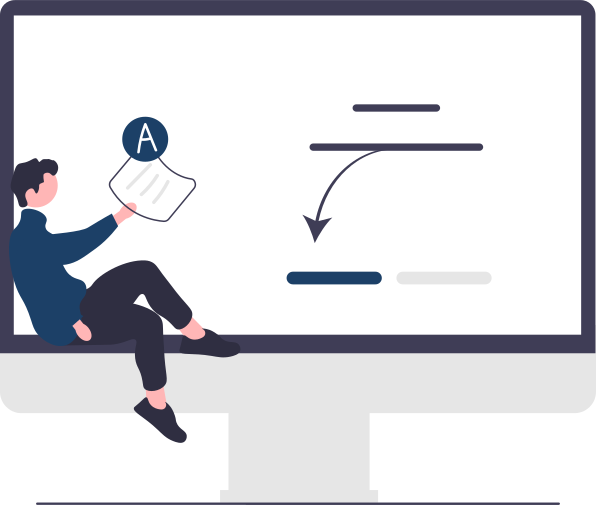

Welcome to My Portfolio!
Hi, I'm Alfie Cross, a passionate front-end developer on an exciting journey to mastering web development.
With a strong foundation in HTML, CSS, and JavaScript, I love creating responsive, accessible, and user-friendly websites.
I'm constantly learning and improving my skills, exploring UI/UX design, interactivity, and best coding practices.
Feel free to browse my projects and reach out. I would love to connect and collaborate!
Get to know me!About Me
Hi, I’m Alfie Cross, a passionate front-end developer with a strong foundation in HTML, CSS, and JavaScript.
I specialize in building responsive, accessible, and user-friendly websites, always striving to create seamless digital experiences.
As an eager learner, I stay up-to-date with the latest web technologies and best practices, constantly refining my skills.
Skills and Expertise
- HTML, CSS, JavaScript
- Responsive Web Design
- Accessibility and UX/UI Principles
- JavaScript and Interactivity
- Performance Optimization
Education & Professional Development
I am continuously expanding my knowledge through online courses, hands-on projects, and self-directed learning.
My commitment to code quality, best practices, and modern front-end frameworks positions me as a strong candidate for any team looking for a motivated developer.
What I’m Looking For
I’m seeking opportunities to apply my skills in real-world projects, collaborate with experienced developers, and contribute to impactful web applications.
Whether it’s an internship, junior developer role, or freelance work, I’m excited to bring my enthusiasm and problem-solving mindset to the table.
My Projects
Here are some of the projects I've worked on:
Project 1: Personal Portfolio
A personal portfolio website designed to showcase my work, skills, and professional background. The goal was to create a clean, modern, and fully responsive site with seamless navigation.
Technologies Used: HTML, CSS, JavaScript, Flexbox, Git & GitHub
View ProjectProject 2: Local Business Café Website
A fully responsive website for a local café, designed to reflect the café's brand identity while providing key business information like the menu, location, and contact details.
Technologies Used: HTML, CSS, JavaScript, CSS Animations, Git & GitHub
View ProjectProject 3: Online Quiz Application
A JavaScript-powered online quiz application that tests users on various topics. This project focuses on real-time interactivity, dynamic content updates, and user engagement.
Technologies Used: HTML, CSS, JavaScript, DOM Manipulation, Git & GitHub
View ProjectContact Me
Feel free to reach out to me through any of the following channels:
Email: alfiecross@myportfolio.com
Phone: 012345678910
LinkedIn: linkedin.com/in/yourprofile
GitHub: github.com/yourusername